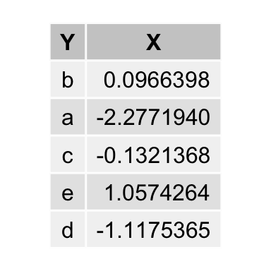

7 data.table
data.table is a fast implementation of R’s classical data.frame. I hardly ever use data frame any more, and if so only, because it seems to work nicer with dplyr and tidyr. However, by using dtplyr this isn’t much of a problem, really.
library("data.table")
library("dplyr")
library("dtplyr")
library("grid")
library("gridExtra")
n <- 1000
rn <- stats::rnorm(n)
ltrs <- base::sample(letters[1:5], n, replace = TRUE)
dt <- data.table::data.table(X = rn, Y = ltrs)
df <- base::data.frame(X = rn, Y = ltrs)
dt[, .SD[sample(.N, 1)], by = c("Y")] %>% tableGrob(rows = NULL) %>% grid.arrange
In the end it depends what style you prefer. I usually go with data.table alone without needing the dplyr/dtplyr dependency. However, the latter is usually more readable. For large data, the fastest solution is probably preferable.
dt.only <- function() dt[, .SD[sample(.N, 1)], by = c("Y")]
dt.dtplyr <- function() dt %>% dplyr::group_by(Y) %>% dplyr::sample_n(1)
df.dplyr <- function() df %>% dplyr::group_by(Y) %>% dplyr::sample_n(1)
microbenchmark::microbenchmark(dt.only(), dt.dtplyr(), df.dplyr())Unit: milliseconds
expr min lq mean median uq max neval
dt.only() 1.523899 1.865236 2.599876 2.288431 2.856858 9.461022 100
dt.dtplyr() 2.433177 2.924024 3.719260 3.596243 4.181204 9.954025 100
df.dplyr() 1.513605 1.973985 2.643341 2.309220 2.675211 15.509272 100
cld
a
b
a